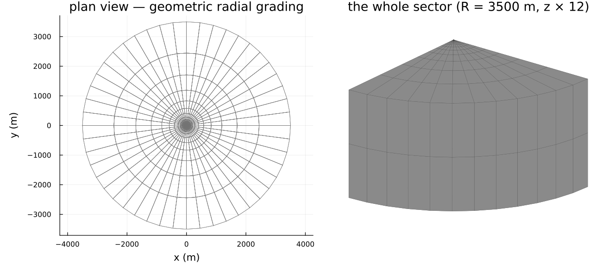
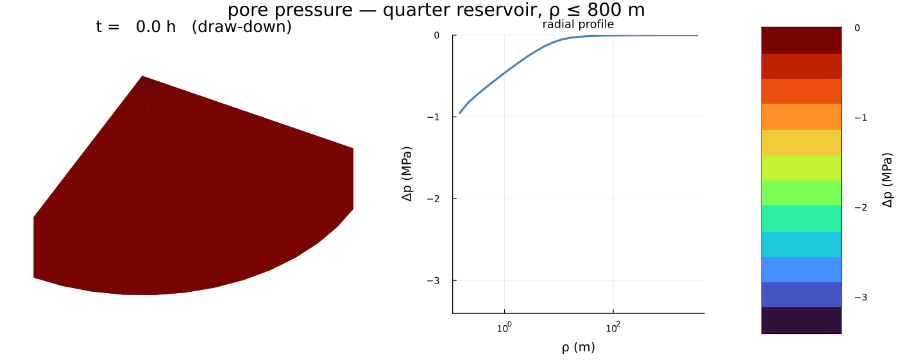
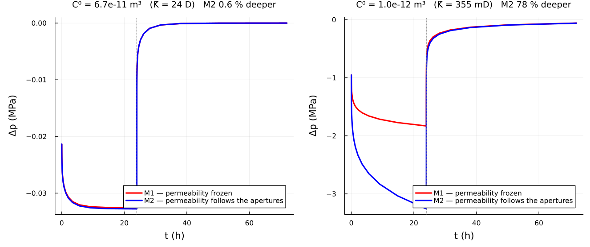
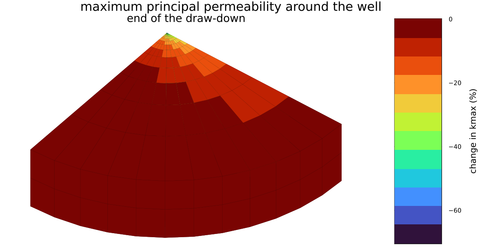

A fractured-reservoir well test
A synthetic fractured reservoir produced by a vertical well, in which the fracture apertures follow the effective stress and the permeability follows the apertures. The model, the microstructure and the two comparison cases are those of [70], § 3.2.
Everything here is three-dimensional and anisotropic: two vertical fracture families make the reservoir conduct six times better along $\underline{e}_2$ than along $\underline{e}_1$, in a problem whose geometry and loading are both axisymmetric.
Figures come from scripts/fe/arma2011_welltest.jl, run by hand and committed. A documentation build never runs a coupled reservoir simulation.
The microstructure
Solid phase $E = 30$ GPa, $\nu = 0.3$; matrix permeability $10^{-18}\ \mathrm{m}^2$, so the fractures carry the flow.
| family | dip | dip azimuth | radius | aperture | conductivity | density |
|---|---|---|---|---|---|---|
| 1 | 90° | 22.5° | 1 m | 10⁻³ m | 6.7·10⁻¹¹ m³ | 0.37 |
| 2 | 90° | 157.5° | 1 m | 10⁻³ m | 6.7·10⁻¹¹ m³ | 0.37 |
props = Dict(:C => C_SOLID, :K => TensISO{3}(1.0e-18))
rve = RVE(:M)
add_matrix!(rve, Ellipsoid(1.0), props)
for φ in (π/8, 7π/8) # dip 90° ⇒ the normal is horizontal
add_phase!(rve, gensym(), ConductiveCrack(1.0; conductivity = 6.7e-11,
euler_angles = (π/2, φ)), props; density = 0.37)
end
mat = FracturedPoroelasticRock(rve, SelfConsistent(); ω₀ = (5.0e-4, 5.0e-4),
k_matrix = 1.0e-18)One microstructure, every coefficient the coupled problem needs:
ℂʰᵒᵐ₃₃₃₃ = 3.189·10⁴ MPa
𝐁 = diag(0.9157, 0.7212, 0.4911) anisotropic Biot tensor
1/M = 2.837·10⁻⁵ MPa⁻¹
𝐊 = diag(9.66·10⁻¹², 5.63·10⁻¹¹, 5.81·10⁻¹¹) m²Both families are vertical, so $\underline{e}_3$ lies in both fracture planes and conducts most; $\underline{e}_1$ bisects the two normals and conducts least. A density of 0.37 per family is past the percolation threshold of this network, which is why $\boldsymbol{K}$ is set by the fracture conductivity and not by the matrix.
Geometry, mesh, and why a quarter is enough
A cylinder of radius 3500 m and height 200 m, produced along its axis. A fracture normal is defined up to a sign, so reflecting about $\underline{e}_1$ maps the 22.5° family onto the 157.5° one, and so does reflecting about $\underline{e}_2$: the microstructure has both symmetry planes and a quarter model with rolling conditions is exact.
The radial layers are geometric (cylinder_sector_grid): the pressure drop is logarithmic in $\rho$, so uniform layers would resolve nothing at the well and waste every element far from it.

| 672 hexahedra, 4524 dofs | $\mathbb{Q}_1/\mathbb{Q}_1$ for $(\underline{u}, p)$ |
| $\rho$ from 0.15 m to 3500 m | 28 geometric layers |
| draw-down 24 h at $5\cdot 10^{-4}\ \mathrm{m^3/s}$ per meter of well | then shut in for 48 h |
Prescribed flow rate on the well wall, no flow through the top and bottom faces, $p = 0$ on the outer boundary; rolling on the bottom and lateral boundaries, free top face.
The solve
The weak form, its backward-Euler discretization and the four tangent blocks are on the coupled poroelastic problem; the driver is thirty lines around mfh_poro_element! and knows nothing about fractures.
EXT.mfh_poro_element!(
Ke, re, cvu, cvp, material, xe[URANGE], xe[PRANGE],
states[cellid(cell)], states_old[cellid(cell)], Δt, mob[cellid(cell)];
u_range = URANGE, p_range = PRANGE, cache = cache
)Two models are compared, as in the reference:
| M1 | the homogenized properties are computed once and frozen |
| M2 | apertures follow the Terzaghi effective stress, conductivities follow the cubic law, $\boldsymbol{K}$ follows |
Both share the same mechanics: for flat cracks $\mathbb{H}$ is the $\omega \to 0$ limit and carries no aperture, so as long as no family closes, $\mathbb{C}^{\rm hom}$, $\boldsymbol{B}$ and $M$ are identical in M1 and M2. The two models differ through the permeability alone — which makes the comparison a clean measurement of the hydromechanical coupling.
The pressure field

The isobars are elongated along $\underline{e}_2$, the direction the fracture network conducts best: an anisotropic microstructure printing itself on an axisymmetric problem.
Well pressure

Pressure falls during the draw-down and recovers after the well is shut in; M2 draws down deeper than M1, because the pressure drop closes the fractures a little, the cubic law turns that into a conductivity drop, and a less permeable reservoir needs a larger draw-down to deliver the same rate. The build-up is far less sensitive.
Two cases, and why
Taking the table above literally, the permeability estimate used here gives a 23-darcy reservoir, a draw-down of 33 kPa and a 0.6 % gap between the two models — the left panel, which looks flat because it is flat. The published figures are an order of magnitude away: −1.8 MPa for M1 and a 33 % gap.
Steady radial flow gives $\Delta p = q\mu\ln(R/\rho_w)/(2\pi\bar{K})$, so −1.8 MPa implies $\bar{K} \approx 4.6\cdot10^{-13}\ \mathrm{m^2}$ — about 470 mD, consistent with the published permeability map. The estimate here returns $2.3\cdot10^{-11}\ \mathrm{m^2}$, ≈ 55 times larger, and that one number propagates linearly through the whole chain:
\[\Delta p \propto \frac{1}{\bar{K}}, \qquad \Delta\omega_i = \underline{n}_i\cdot(\mathbb{S}_i : \Delta\boldsymbol{\Sigma}')\cdot\underline{n}_i \propto \Delta p , \qquad \frac{\Delta C_i}{C_i} = 3\,\frac{\Delta\omega_i}{\omega_i} .\]
The right panel tests that reading directly: the fracture conductivity is calibrated to $\bar{K} = 350$ mD — the knob § 1.3 of the reference leaves open, since $C^0$ may differ from the Poiseuille value "to account for tortuosity due to the roughness of fracture lips or to the fracture filling" — and nothing else is touched. Then
| M1 draw-down at 24 h | M2 vs M1 | $k_{\max}$ at the well face | |
|---|---|---|---|
| here, calibrated | −1.83 MPa | +78 % | −70 % |
| published | −1.8 MPa | +33 % | ≈ −50 % |
M1 lands on the published value, and the draw-down is still declining at 24 h rather than stabilized, as published — the diffusion time scales as $1/\bar{K}$ too. The coupling comes out about twice too strong: calibrating the conductivity fixes the permeability level, but not its sensitivity, and past percolation this estimate is very nearly proportional to $C_i$, whereas the reference's Eq. (12) damps that response. Same mechanisms, same signs, an amplitude a factor two apart.

The permeability is reduced near the well, where the pressure variation is most negative, and the reduction is itself anisotropic — the isovalue bands are not circular.
What this reproduces, and what it does not
- Reproduced: the microstructure, the joint poroelastic and hydraulic upscaling from one RVE, the Terzaghi-driven aperture update, the cubic law, the coupled u–p simulation and both models — with the published draw-down magnitude once the permeability level is matched, and every qualitative conclusion of § 3.2.
- Not reproduced: the self-consistent permeability of Eq. (12), which carries a matrix concentration factor built on the order-2 Hill tensor of the effective medium. The estimate here reads each family's saturated contribution in the effective medium without that factor (
fracture_permeability), so the two agree in structure — same percolation mechanism, same saturation — but differ by ≈ 55 on the level and ≈ 2 on the sensitivity. Eq. (12) is not transcribed here because Eqs. (13)–(15) that define it are, in the copy at hand, not legible with enough confidence to implement without guessing. - Not shipped: the consolidation column of § 3.1, models M1/M2/M3 — the case where a family actually closes during the loading. Everything it needs is here; see the roadmap.